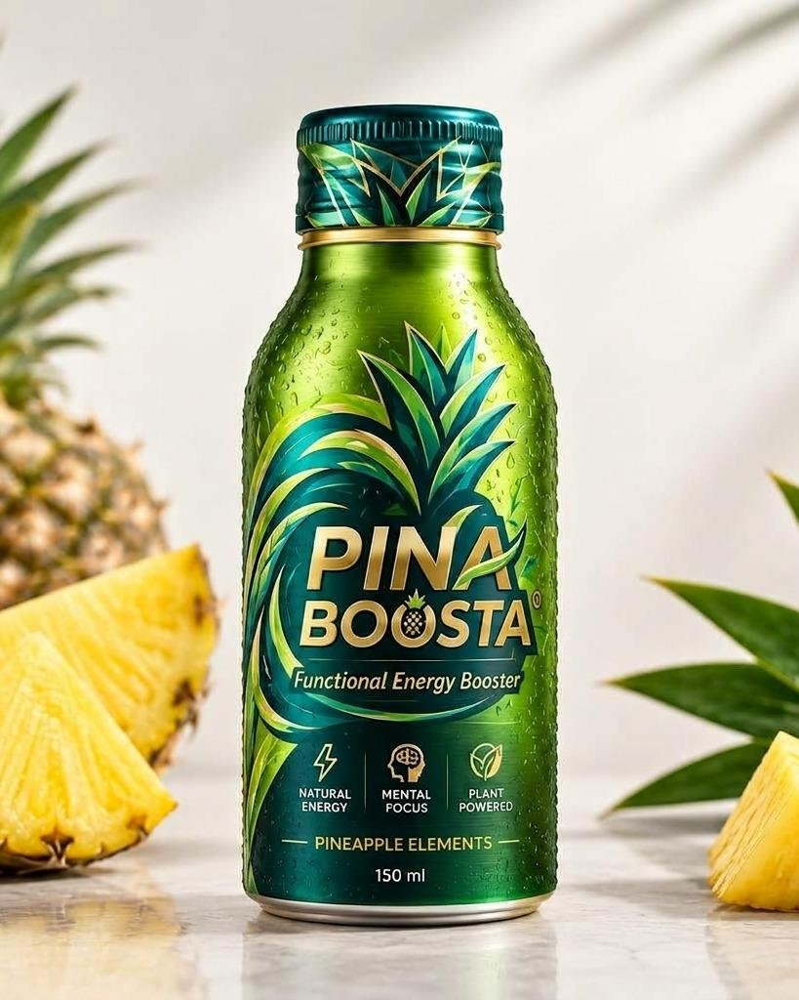

Natural energy
A 150 ml functional booster built around pineapple, for when the day needs a second wind.
Pineapple-powered energy. Grown in Malaysia.
A great-tasting functional drink made with pineapple elements from Malaysian-grown fruit, for the work shift, the study session and the last set.

Small bottle, clear job: energy and focus, from a fruit Malaysia grows better than almost anyone.
A 150 ml functional booster built around pineapple, for when the day needs a second wind.
Made for long meetings, exam weeks and the last hour of the shift.
Pineapple elements from Malaysian-grown fruit, including our own estate in Pontian, Johor.
Back-to-back meetings, long drives, the double shift. Keep one in the cooler.
Notes, revision, one more chapter. Stay sharp to the last page.
Futsal, badminton, the gym or the run. Boosta before you go.

Most energy drinks are invented in a lab. Ours starts in a field in Pontian, Johor, where we grow the pineapple ourselves. Malaysian fruit, Malaysian brand, built to travel.
The first run of Pina Boosta is a limited, numbered batch. Every bottle carries its own number. When it’s gone, it’s gone. Join the list and we’ll message you the day it drops.
Draft: release date, quantity and price to be confirmed.

The café on our pineapple estate is the flagship home of Pina Boosta. Take the plantation tour, pick a pineapple, then try it cold where the fruit grows.
A pineapple-based functional energy booster in a 150 ml bottle, made by Logsco Beverages in Johor with pineapple elements from Malaysian-grown fruit.
Halal and food-safety certification are planned ahead of launch. We’ll publish the certificate on this page as soon as it’s issued.
The full ingredient list and nutrition panel will be published here before Batch 001 drops.
Malaysia first. The first place to try it is the café on our Pontian estate, then Batch 001 through the list above. Retail partners will be listed on the Find it page.
Yes, please. Tell us about your outlet on the stockist page and the team will get back to you.